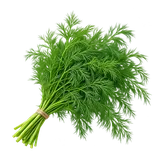

होम / सुआ पत्ती

सुआ पत्ती का भाव आज | Dill Leaves Mandi Price Today
सुआ पत्ती के आज के उपलब्ध मंडी भाव देखें—जोधपुर के मॉडल, न्यूनतम और अधिकतम रेट और प्रति किलो भाव।
नीचे मंडी-वार सूची में सुआ पत्ती के उपलब्ध भाव दिए हैं। मंडी के नाम पर क्लिक करके उस मंडी की दूसरी फसलों के भाव भी देख सकते हैं।
सुआ पत्ती का भाव कैसे देखें और रेट किन बातों से बदलता है
सुआ पत्ती ताजी, खुशबूदार हरी पत्तियों वाली मौसमी सब्जी है। यह सूखे सुआ बीज से अलग उत्पाद है और इसकी कीमत सामान्यतः प्रति किलो समझी जाती है।
आज का सुआ पत्ती भाव कैसे देखें
इस पेज की मंडी-वार तालिका में न्यूनतम, मॉडल और अधिकतम भाव देखें। अपनी नज़दीकी मंडी तथा उपलब्ध दूसरी मंडियों के भाव की तुलना करके फैसला लेना अधिक उपयोगी रहता है।
- अपनी मंडी या राज्य चुनकर भाव देखें।
- न्यूनतम, मॉडल और अधिकतम भाव में अंतर समझें।
- पुराने और नए उपलब्ध रिकॉर्ड में फर्क देखकर निर्णय लें।
गुणवत्ता और ग्रेड का असर
ताजगी, हरा रंग, कोमल पत्तियां, साफ छंटाई और बिना मुरझाए बंडल सुआ पत्ती की गुणवत्ता में फर्क लाते हैं। पीली, दबाई हुई या ज्यादा डंठल वाली पत्तियों का भाव अलग हो सकता है।
आवक, मांग और बाजार
सर्दियों की स्थानीय आवक, जल्दी खराब होने की प्रकृति और आसपास की मांग के कारण सुआ पत्ती का बाजार भाव तेजी से बदल सकता है। उपलब्ध रिकॉर्ड में प्रति किलो भाव देखकर ही तुलना करें।
सुआ पत्ती बेचने या खरीदने से पहले ध्यान रखें
- सुआ पत्ती का भाव सूखे सुआ बीज से अलग देखें।
- ताजे और मुरझाए बंडल अलग रखकर गुणवत्ता समझें।
- खरीद या बिक्री से पहले प्रति किलो दर और बंडल की ताजगी दोनों देखें।
अक्सर पूछे जाने वाले सवाल
सुआ पत्ती का भाव किलो में क्यों देखा जाता है?
सुआ पत्ती ताजी हरी सब्जी है, इसलिए उसका भाव प्रति किलो समझना अधिक उपयोगी रहता है। इसे सूखे सुआ बीज के क्विंटल भाव से न मिलाएं।
सुआ पत्ती किस मौसम में मिलती है?
सुआ पत्ती की उपलब्धता स्थानीय मौसम और आवक पर निर्भर करती है। सर्दियों में इसकी आवक आम तौर पर अधिक दिख सकती है, लेकिन मंडी-वार स्थिति अलग रहती है।
अच्छी सुआ पत्ती की पहचान क्या है?
ताजी हरी, कोमल, साफ और बिना मुरझाई पत्तियों वाले बंडल बेहतर गुणवत्ता में माने जाते हैं। ज्यादा पीली पत्तियां या दबे हुए बंडल का भाव अलग हो सकता है।